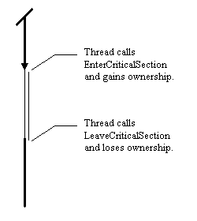
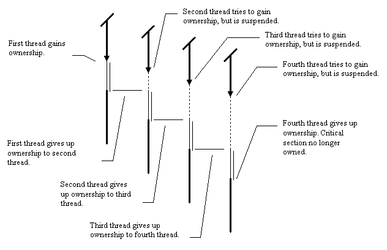

Chapter 6. More synchronization: Critical sections and mutexes.
In this chapter:
Synchronize limitations.
Synchronize has several drawbacks which make it unsuitable for anything
except very simple multithreaded applications.
-
Synchronize is only useful when attempting to communicate between a worker
thread and the main VCL thread.
-
Synchronize insists that the worker thread wait until the main VCL thread
is completely idle even when this is not strictly necessary.
-
If applications make frequent use of Synchronize, the main VCL thread becomes
the bottleneck, and no real performance gains are realized.
-
If synchronize is used to communicate indirectly between two worker threads,
both threads can be suspended waiting for the main VCL thread.
-
Synchronize can cause deadlock if the main VCL thread waits for any other
threads.
On the plus side, Synchronize does have one advantage over most other synchronization
mechanisms:
-
Just about any code can be passed to Synchronize, including thread unsafe
VCL code.
It is important to remember why threads are being used in an application.
The overriding reason for most Delphi programmers will be that they want
their application to remain responsive, whilst performing operations that
either take a long time, or use blocking data transfers or I/O. This often
means that the main application thread should be performing short, event
based routines, and handling user interface updates. It's good at responding
to user input, and displaying user output. The other threads in the application
will be performing the "grunt work". In the light of this philosophy, one
often finds that most code executing in worker threads does not use parts
of the VCL which are not thread safe. Worker threads may perform operations
on files, or databases, but they rarely use descendants of TControl. Seen
in this light, Synchronize is a case of overkill.
Many threads only need to communicate with the VCL in simple ways, such
as transferring a stream of data, or executing a database query and returning
a data structure as the result of this query. Referring back to Chapter
3, we note that we only need to maintain atomicity when modifying shared
data. To take a simple example, we may have a stream which is written to
by a worker thread, and read periodically by the main VCL thread. Do we
need to ensure that the VCL thread is never executing at the same time
as a worker thread? Of course not! All we need to ensure is that only one
thread modifies this shared resource at once, thus eliminating race conditions,
and making operations on the shared resource atomic. This property is known
as mutual exclusion. There are many synchronization primitives which
can be used to enforce this property. The simplest of these is known as
the Mutex. Win32 provides a mutex primitive, and a close relation
of it, the Critical Section. Some versions of Delphi contain a class
which encapsulates the Win32 critical section calls. This class will not
be discussed here, since this functionality is not common to all 32 bit
versions of Delphi. The users of such a class should have little difficulty
using the corresponding methods in the class to achieve the same effects
as those discussed here.
Critical Sections.
The Critical Section is a primitive which allows us to enforce mutual exclusion.
The Win32 API supports several operations upon it:
-
InitializeCriticalSection.
-
DeleteCriticalSection.
-
EnterCriticalSection.
-
LeaveCriticalSection.
-
TryEnterCriticalSection (Windows NT only).
The InitializeCriticalSection and DeleteCriticalSection operations can
be considered to be very much the same as heap creation and destruction
of objects. On the whole, it is sensible to keep critical section creation
and destruction to one particular thread, normally the longest lived. Obviously,
all the threads that wish to synchronize access using this primitive must
have a handle or pointer to this primitive. This may be direct via a shared
variable, or indirect, perhaps because the critical section is embedded
in a thread safe class to which both threads have access.
Once the critical section object is created it can be used to control
access to a shared resource. The two main operations are EnterCriticalSection
and LeaveCriticalSection. In a great deal of the standard literature
on the topic of synchronization, these operations are also known as WAIT
and SIGNAL, or LOCK and UNLOCK respectively. These
alternative terms are also used for other synchronization primitives, and
have roughly equivalent meanings. By default, when the critical section
is created, none of the threads in the application have ownership
of it. To gain ownership, a thread makes a call to EnterCriticalSection,
and if the critical section is not owned, then this thread gains ownership.
The thread then typically performs operations upon a shared resource (the
critical piece of code, illustrated by a double line), and once it has
finished, it releases ownership via a call to LeaveCriticalSection.

The important property that critical sections have is that only one thread
may have ownership at any one time. If a thread tries to enter a critical
section when another thread is already inside the critical section, then
it will be suspended, and only reawoken when the other thread has left
the critical section. This provides us with the required mutual exclusion
around a shared resource. More than one thread can be suspended waiting
for ownership at one time, so critical sections can be used for synchronization
between more than two threads. By way of an example, here's what happens
if four threads try to gain access to the same critical section at roughly
similar times.

As the diagram makes clear, only one thread is ever executing critical
code at once, so there are no race conditions or atomicity problems.
So what does this
all mean to the Delphi programmer?
This means that, provided one is not performing VCL operations, but only
doing simple data transfers, the Delphi thread programmer is free of the
burdens of TThread.Synchronise.
-
The VCL thread need not be idle before the worker thread modifies shared
resources, it only needs to be out of the critical section.
-
Critical sections neither know nor care about whether a thread is the main
VCL thread, or an instance of a TThread object, so one can use critical
sections between any two threads.
-
The thread programmer can now (almost) safely use WaitFor, removing the
deadlock problem.
My last point is qualified because it is still possible to produce deadlock
in exactly the same manner as before. All one has to do is to call WaitFor
in the main thread when currently inside a critical section. As we shall
see later on, suspending threads for any large amount of time whilst in
critical sections is normally a bad idea. Now that the theory has been
adequately explained, I'll present another example. This one is a slightly
more elegant and interesting prime number program. When started, it tries
to find prime numbers starting at 2, and works upwards. Every time it finds
a prime number, it updates a shared data structure (a string list), and
informs the main thread that it has added more data to the string list. Here
is the code for the main form.
It is fairly similar to previous examples with respect to thread creation,
but there are a few extra members of the main form which have to be set
up. StringSection is the critical section which controls access to resources
shared between threads. FStringBuf is a string list which acts as a buffer
between the main form and the worker thread. The worker thread sends results
to the main form by adding them to this string list, which is the only
shared resource in this program. Finally we have a boolean variable, FStringSectInit.
This variable serves as a check, ensuring that the required synchronization
objects are in fact created before being used. The shared resources are
created when we start a worker thread, and destroyed shortly after we are
sure that the worker thread has quit. Note that since the string list acting
as a buffer is dynamically allocated, we must use WaitFor at thread
destruction time to ensure that the worker thread has stopped using the
buffer before freeing it.
We can use WaitFor in this program with no worries about deadlock, because
we can prove that there is never a situation where both threads are waiting
for each other. The line of reasoning required to prove this is simple.
-
The worker thread only waits when trying to gain access to the critical
section.
-
The main program thread only waits when waiting for the worker thread to
finish.
-
The main program does not wait when it has ownership of the critical section.
-
If the worker thread is waiting for the critical section, the main program
will release the critical section before it ever waits for the worker thread.
Here
is the code for the worker thread. The worker thread iterates through
successive positive integers, trying to find one that is prime. When it
finds one, it gets ownership of the critical section, modifies the buffer,
leaves the critical section, and then posts a message to the main form,
indicating that there is data in the buffer.
Points of interest.
This example is more complicated than previous examples, because we have
an arbitrarily large buffer between two threads, and as a result, there
are various problems that have to be considered and avoided, as well as
some features of the code that deal with unusual situations. These points
can be summarized:
-
Can data be lost or "frozen" in the buffer?
-
What about "out of date" messages?
-
Flow control issues.
-
Inefficiencies in the string list, static vs dynamic sizing.
Can data be lost
or "frozen" in the buffer?
The worker thread indicates to the main program thread that there is data
to be processed in the buffer by posting it a message. It is important
to note when using windows messaging in this manner that there is nothing
inherent in the thread synchronization which ties up a particular message
with a particular update to the buffer. Luckily, in this case, the rules
of cause and effect work in our favour: When the buffer is updated, a message
is sent after the update. This means that the main program thread
always receives buffer update messages after a buffer update. Hence, it
is impossible for data to remain in the buffer for an indeterminate amount
of time. If data is currently in the buffer, then the worker thread and
the main thread are somewhere in the process of sending or receiving a
buffer update message. Note that if the worker thread posted a message
just before updating the buffer, it might be possible for the main
thread to process that message, reading the buffer before the worker
thread had updated the buffer with the most recent result, meaning that
the most recent result could remain stuck in the buffer for some time.
What about "out of date"
messages?
The laws of cause and effect worked well in the previous case, but unfortunately,
the converse problem also holds. If the main thread is busy updating for
a long time, it is possible for messages to build up in its queue, such
that we receive updates a long time after the worker thread sent those
messages. In most situations, this does not pose a problem. However, the
one particular case that needs to be considered is the case where the user
has stopped the worker thread, either directly by pressing the "stop" button,
or indirectly by closing the program. In this case, it is entirely possible
for the main VCL thread to terminate the worker thread, remove all synchronization
and buffer objects, and then subsequently receive messages which have been
sitting in a queue for some time. In the example shown, I have checked
for this problem by ensuring that the critical section and buffer objects
still exist before processing the message (The line of code commented Not
necessarily the case!). This approach tends to be sufficient for most
applications.
Flow Control
issues and list inefficiencies.
Back in Chapter 2, I stated that once a thread had been created, no implicit
synchronization existed between them. This has been evident in early examples,
as demonstrated by the problems that thread switching can cause, a manifestation
of a positional synchronization problem. The same problem exists for rate
synchronization. There is nothing in the above example that guarantees
that the worker thread will produce results sufficiently slowly for the
main VCL thread to be able to keep up when displaying them. In fact, if
the program is executed such that the worker thread starts out by looking
for small prime numbers, it is quite likely that, given equal shares of
CPU time, the worker thread will outpace the VCL thread by quite a large
margin. This problem is solved by some means of flow control.
Flow control is the name given to the process by which the speed of
execution of several threads is balanced so that the rate of input into
a buffer and the rate of output are smoothly balanced. The example above
is particularly simple, but it occurs in many other cases. Almost every
I/O or data transfer mechanism between threads or processes incorporates
flow control in some manner. In simple cases, this may simply involve only
allowing one outstanding piece of data in transit, and suspending either
the producer (the thread that puts data into the buffer) or the
consumer
(the thread that takes it out). In more complex cases, the threads may
be executing on different machines, and the "buffer" may be a composite
of internal buffers on those machines, and the buffering capabilities of
the network in between them. A large part of the TCP protocol is that of
managing flow control. Every time you download a web page, the TCP protocol
arbitrates between the two machines, ensuring that whatever the relative
CPU or disk speed, all data transfers occur at a rate that both machines
can handle[1]. In the case of our example
above, a fairly crude attempt at flow control has been made. The thread
priority of the worker thread has been set so that the scheduler will select
the main VCL thread in preference to the worker thread whenever both have
work to do. Under Win32 schedulers, this removes the problem, but it is
not really a cast iron guarantee.
Another issue which relates to flow control is that in the case of the
example above, the size of the buffer is unbounded. Firstly, this creates
an inefficiency problem, in that the main thread has to perform a large
number of memory moves when removing the first member of a large string
list, and secondly, this means that with the flow control mentioned above,
the buffer might grow without limit. Try removing the statement that sets
the thread priority. You will find that the worker thread generates results
faster than the VCL thread can process them, which makes the string list
large. This then slows down the VCL thread even more (since the string
removal operations take longer on a larger list), and the problem gets
even worse. What you will eventually find is that the list gets large enough
to fill up main memory, the machine starts thrashing, and everything grinds
to a halt. So much to a halt in fact, that when testing the example, I
was unable to get Delphi to respond to my request to quit the app, and
had to resort to using the Windows NT task manager to close the process!
Simple though this program seemed at first sight, it has raised a large
number of potential gremlins. More robust solutions to these problems are
discussed in the second part of this guide.
Mutexes.
The reader might be forgiven for thinking that I had spent so long explaining
critical sections that I had altogether forgotten about mutexes. Rest assured
that this is not the case, it is merely that mutexes present no new conceptual
challenges. A mutex works in exactly the same way as a critical section.
The only difference in Win32 implementations is that the critical section
is limited to being used within only one process. If you have a single
program that uses several threads, then the critical section is lightweight,
and adequate for your needs. However, when writing a DLL, it is often possible
that several different processes will be using the DLL at the same time.
In this case, you must use mutexes instead of critical sections. Although
the Win32 API provides a more comprehensive range of functions for dealing
with Mutexes and other synchronization objects than will be explained here,
the following functions are analogous to those listed for critical sections
above:
-
CreateMutex / OpenMutex
-
CloseHandle
-
WaitForSingleObject(Ex)
-
ReleaseMutex
These functions are well documented in the Win32 API help files, and will
be discussed in more detail later on.
[1] The TCP protocol also performs many other weird
and wonderful functions, such as coping with lost data, and optimizing
window sizes so that the flow of data is not only matched to the two end
point machines but also the network in between, whilst minimizing latency
and maximizing throughput. It also contains back-off algorithms to ensure
that several TCP connections can share one physical connection without
any of them monopolizing the physical resource.
[Contents] [Previous][Next]
© Martin Harvey
2000.